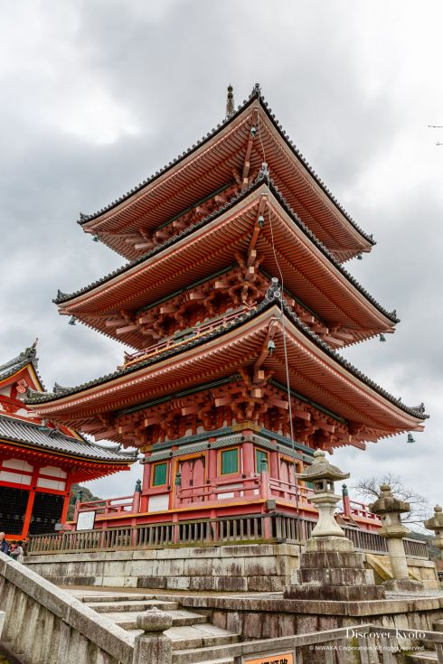
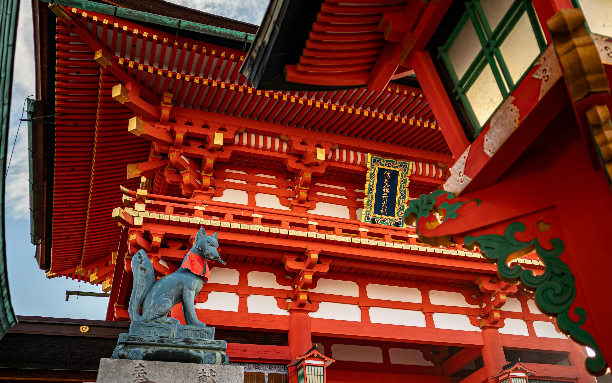
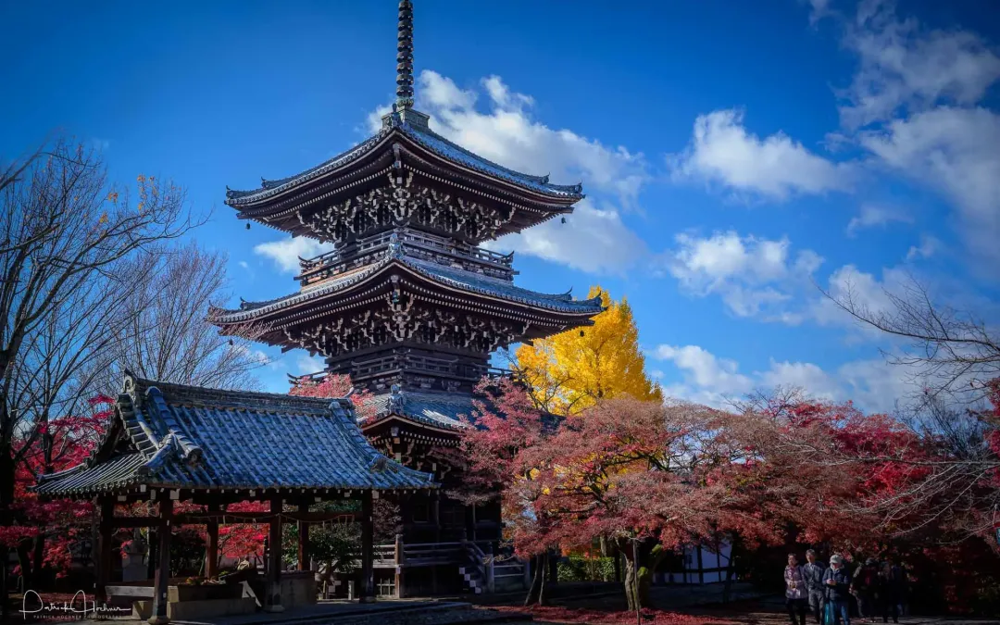
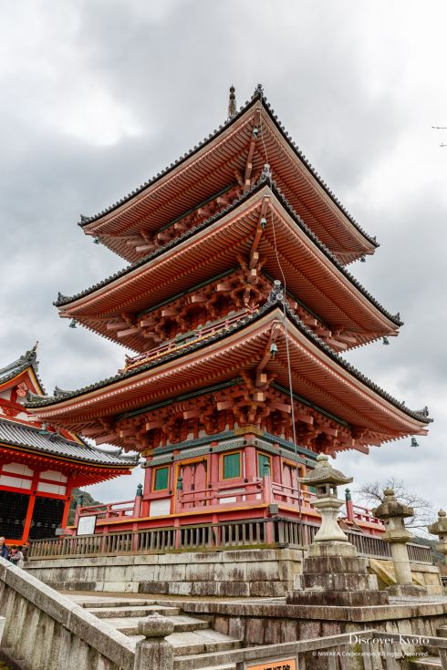
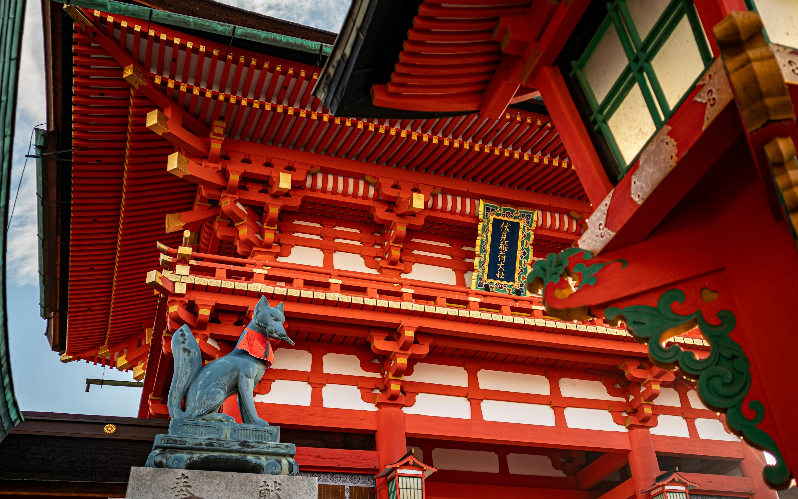
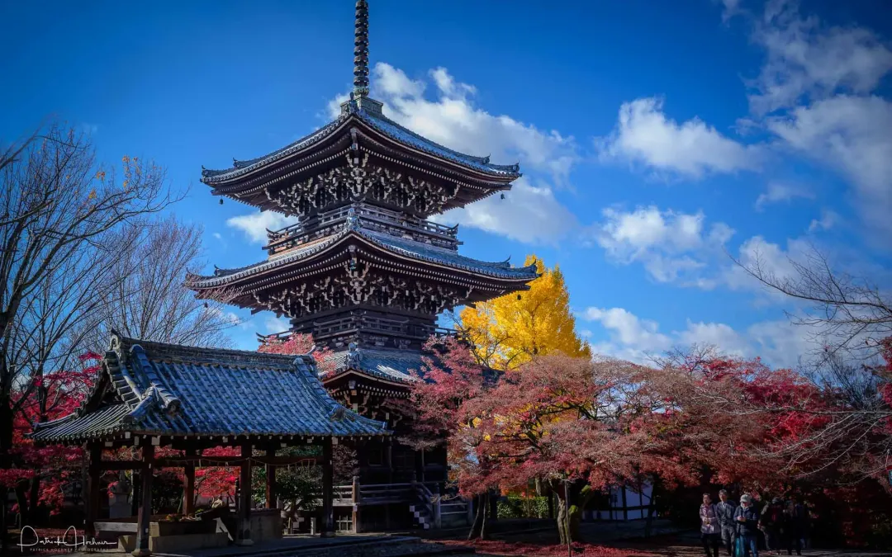

Kyoto Temple
 







The Kyoto Temple, known for its serene beauty and rich history, is one of Japan's most iconic cultural sites. It symbolizes the artistic and spiritual heritage of ancient Japan.